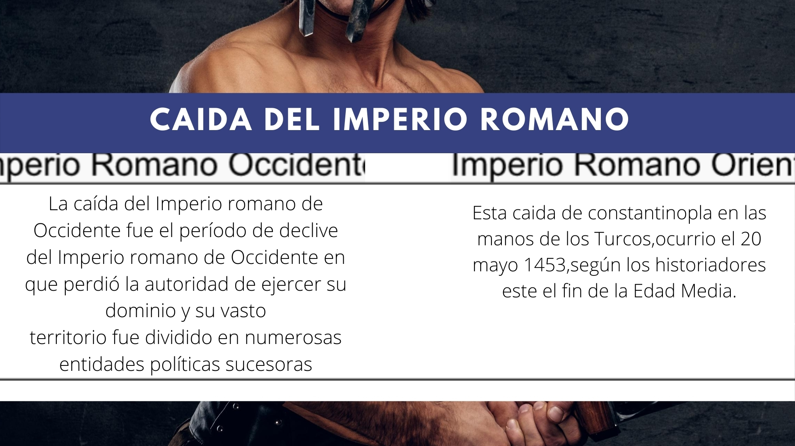
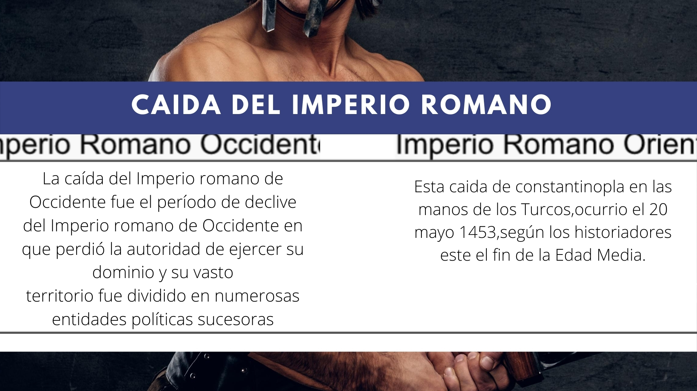
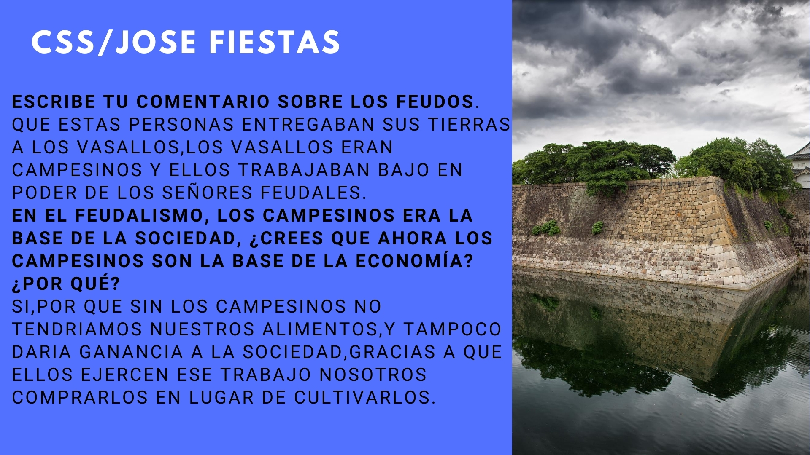
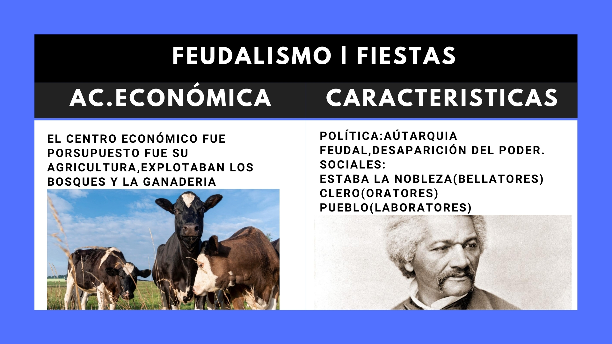

Mis Proyectos de Ciencias Sociales
20 y 21
Semana 20
En la semana 20 hablamos sobre la caida del Imperio Romano,leimos un poco de como sucedio, resolvimos un cuadro donde teniamos que hablar de la Caida del Imperio Occidental y Oriental.(Ciencias Sociales)
Semana 21
Aqui vimos el tema de Feudalismo,dimos un resumen de A.Economica y sus caracteristicas Política y Social
(Todas las pruebas estan abajo)
 


